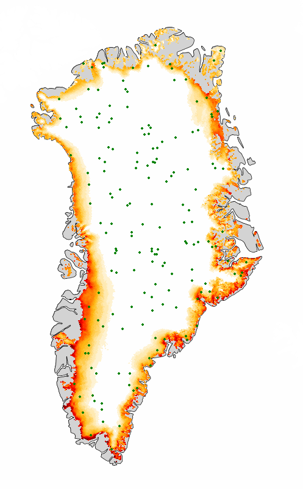

Approach
1. Learn from sparse points
AI models learn to predict surface melt from a sparse set of context points, using the HIRHAM5 regional climate model as a training dataset.
2. Maximise likelihood
Training maximises the likelihood of the true surface melt values at target locations, given the context points and other input variables.
3. Predict everywhere
Once trained, the model predicts surface melt across the entire grid from a sparse set of context points and other input variables.
HIRHAM5 surface melt context points

→
AI model
Train ~1 million parameters to maximise target probability
HIRHAM5 surface melt target points
